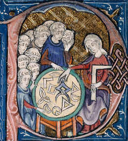

Geometric Science of Information (GSI)
Biannual international conference co-organized by Frédéric Barbaresco and Frank Nielsen.
GSI cycle: GSI'21
GSI'19
GSI'17
GSI'15
GSI'13
Related events: MaxEnt'22
SPIGL'20
FGSI'19
CIG'17
MaxEnt'14
MIG'11
ETVC'08

The conference image signage is
Woman
teaching geometry, an illustration of Euclid's Elements (c. 1310).
Jump to French description
Announcing and celebrating 10 years of GSI with
GSI'23 at Saint-Malo France:
https://gsi2023.org/
Submission:Easychair GSI'23
Related event at Saint-Malo: IEEE Information Theory Workshop (ITW), 23-28 April 2023
Springer GSI conference home page
(LNCS 8085, 9389, 10589, 11712, 12829),
e-proceedings


BibTex labels
- 5th International Conference, GSI 201, Paris, France, July 21-23, 2021
üìñProceedings
üìπGSI'21 video
web site
GSI2021 booklet
Opening slides
Closing slides
Awards:
Group photo:
- 4th International Conference, GSI 2019, ENAC, Toulouse, France, August 27–29, 2019
üìñProceedings
üìπGSI'19 video
web site
Geometric Structures of Information (Edited book)
booklet (including the programme)
Group photo:
- 3rd International Conference, GSI 2017, Mines ParisTech, Paris, France, November 7-9, 2017
üìñProceedings
üìπGSI'17 video
web site
Group photo:

- 2nd International Conference, GSI 2015, Ecole Polytechnique, Palaiseau, France, October 28-30, 2015
üìñProceedings
üìπGSI'15 video
web site (LIX Colloquium 2015)
Group photo:

- First International Conference, GSI 2013, Mines ParisTech, Paris, France, August 28-30, 2013.
üìñProceedings
üìπGSI'13 video
web site
Geometric Theory of Information (Springer, Edited book)
Group photo:

Some related events
- Maximum
Entropy conference (MaxEnt'22) held in
Paris at Institut Henri Poincaré, July 18-22 2022
Group photo indoor and outdoor!
üìñProceedings
üìπMaxEnt'22 video
web site
MaxEnt22 booklet
Opening slides
Closing slides
- Joint
Structures and Common Foundation of Statistical Physics,
Information Geometry and Inference for Learning,
Les Houches seminar,
26 July-1st August 2020.
Geometric Structures of Statistical Physics, Information Geometry, and Learning (Edited book, 2021)
üìπLes Houches video
Group photo:

(due to COVID-19, the event was held hybrid with both physical and remote attendance)
- Peyresq summer school 2019 of GRETSI
(Géométrie de l'information pour le traitement du signal et des images)
Group photo:

- Foundations of Geometric Structures of Information (FGSI'19)
4-6 Feb 2019 Montpellier (France)
Web site: https://fgsi2019.sciencesconf.org/
Poster
Programme (PDF)
Slides and documents
Group photo:
- Topological and Geometrical Structures of Information (TGSI'17)
CIRM Luminy, 28th August to 1 September 2017
Web site: http://fconferences.cirm-math.fr/1680.html
Programme
Group photo:
- Computational Information Geometry For Image and Signal Processing, ICMS, 2017
Computational Information Geometry: For Image and Signal Processing (Springer, Edited book)
- MaxEnt 2014
21st-26th September 2014, Château du Clos Lucé, Amboise (France)
Proceedings MaxEnt 2014
Group photo:
- Matrix Information Geometry, 2011.
web site
Booklet
Matrix Information Geometry (Springer, Edited book)
Group photo:
- Emerging Trends in Visual Computing (ETVC 2008), LIX Fall Colloquium.
Proceedings
(Abstract)
Video
web site
Read LNCS proceedings
LNCS proceedings
Group photo:
- Seminar Léon Brillouin : sciences géométriques de l’information, started 3rd December 2009:
Woman teaching geometry
High resolution image
Détail d'une scène dans la lettre 'P' d’une enluminure avec une femme tenant une équerre et
un compas à pointes sèches. Elle est observée par un groupe d'étudiants.
Au Moyen âge, il est inhabituel de voir des femmes représentées comme des professeurs,
en particulier quand les étudiants semblent être des moines. Elle est plus probablement la
personnification de la Géométrie, basée sur le livre célèbre de Martianus Capella de Nuptiss Philologiae
et Mercurii, [5ème c.] une source standard des images allégoriques des sept arts libéraux.
Illustration au début des Eléments d'Euclide, dans la traduction attribuée à
Adelard de Bath.

- Geometric Structures of Statistical Physics, Information Geometry, and Learning
SPIGL'20, Les Houches, France, July 27–31, Frédéric Barbaresco, and Frank Nielsen (Eds.), Springer, 2021.
- Progress
in Information Geometry:
Theory and Applications, Frank Nielsen (Ed.), Springer, 2021.
- Joseph Fourier 250th Birthday
Modern Fourier Analysis and Fourier Heat Equation in Information Sciences for the XXIst century,
Frédéric Barbaresco and Jean-Pierre Gazeau (Eds.), MDPI Entropy, 2019.
- Introduction
to Symplectic Geometry, Jean-Louis Koszul (translated by Yiming Zou), Springer, 2019.
Geometric Structures of
Information, Frank Nielsen (Ed.), Springer, 2019.
- Differential Geometrical Theory of Statistics,
Frédéric Barbaresco and Frank Nielsen (Eds.), MDPI Entropy, 2017.
- Computational Information Geometry
For Image and Signal Processing, Springer 2017
- Information, Entropy
and Their Geometric Structures, Frédéric Barbaresco and Ali Mohammad-Djafari (Eds), MDPI Entropy, 2015.
- Geometric Theory of Information, Springer 2014
- Matrix Information Geometry, Springer 2013
Poster for the Geometric Science of Information

Hall of fame GSI books
A very partial list of books which are shaping GSI:
- Siegel, Carl Ludwig. Symplectic geometry. Elsevier, 2014.
- Hua, Luogeng. Harmonic analysis of functions of several complex variables in the classical domains. No. 6. American Mathematical Soc., 1963.
- Cencov, Nikolai Nikolaevich. Statistical decision rules and optimal inference. No. 53. American Mathematical Soc., 2000.
- Amari, Shun-ichi. "Differential-geometrical methods in statistics." Lecture Notes on Statistics 28 (1985)
- Amari, Shun-ichi, and Hiroshi Nagaoka. Methods of information geometry. Vol. 191. American Mathematical Soc., 2000.
- Koszul, Jean Louis, and Yi Ming Zou. Introduction to symplectic geometry. Springer Singapore, 2019.
- Nomizu, Katsumi, Nomizu Katsumi, and Takeshi Sasaki. Affine differential geometry: geometry of affine immersions. Cambridge university press, 1994.
- Ay, Nihat, et al. Information geometry. Vol. 64. Cham: Springer, 2017.
- Shima, Hirohiko. The geometry of Hessian structures. World Scientific, 2007.
- Marsden, Jerrold E., and Tudor S. Ratiu. Introduction to mechanics and symmetry: a basic exposition of classical mechanical systems. Vol. 17. Springer Science & Business Media, 2013.
- Kostant, Bertram. Collected Papers: Volume I 1955-1966. Vol. 1. Springer Science & Business Media, 2009.
- Gelfand, Sergei I., and Yuri I. Manin. Methods of homological algebra. Springer Science & Business Media, 2002.
- Souriau, Jean-Marie, and Ch Cushman. Structure of dynamical systems: a symplectic view of physics. Vol. 149. Springer Science & Business Media, 1997.
JM Souriau web with PDF papers
- Marle, Charles-Michel. Géométrie symplectique et géométrie de Poisson. Calvage & Mounet, 2018.
BibTex
@book{GSI-2013,
title={Geometric Science of Information: First International Conference, GSI 2013, Paris, France, August 28-30, 2013, Proceedings},
author={Nielsen, Frank and Barbaresco, Fr{\'e}d{\'e}ric},
volume={8085},
year={2013},
publisher={Springer}
}
@book{GSI-2015,
title={Geometric Science of Information: Second International Conference, GSI 2015, Palaiseau, France, October 28-30, 2015, Proceedings},
author={Nielsen, Frank and Barbaresco, Fr{\'e}d{\'e}ric},
volume={9389},
year={2015},
publisher={Springer}
}
@book{GSI-2017,
title={Geometric Science of Information: Second International Conference, GSI 2017, Paris, France, November 7-9, 2017, Proceedings},
author={Nielsen, Frank and Barbaresco, Fr{\'e}d{\'e}ric},
volume={10589},
year={2017},
publisher={Springer}
}
@book{GSI-2019,
title={Geometric Science of Information: Second International Conference, GSI 2019, Toulouse, France, August 27-29, 2019, Proceedings},
author={Nielsen, Frank and Barbaresco, Fr{\'e}d{\'e}ric},
volume={11712},
year={2019},
publisher={Springer}
}
@book{GSI-2021,
title={Geometric Science of Information: 5th International Conference, GSI 2021, Paris, France, July 21-23, 2021: Proceedings},
author={Nielsen, Frank and Barbaresco, Fr{\'e}d{\'e}ric},
volume={12829},
year={2021},
publisher={Springer Nature}
}
Last updated by Frank.Nielsen@acm.org, July 2022/